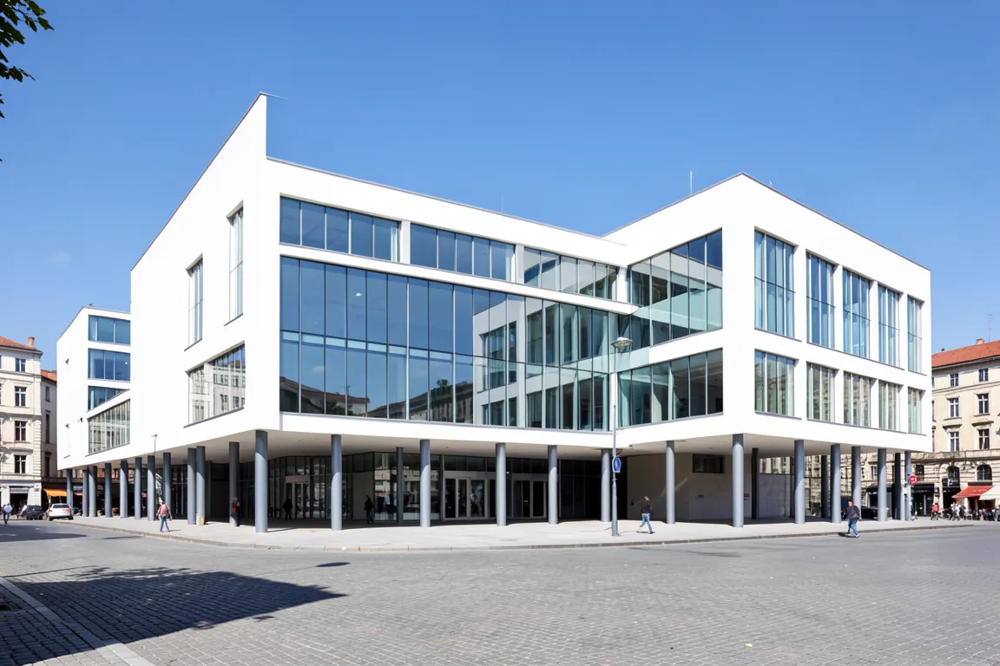

architecture · 1920s–1960s · also: Modern Movement, Neues Bauen, Functionalism
Light rectilinear volumes of steel, glass and white render, with flat roofs, ribbon windows and free plans. The Bauhaus, Le Corbusier and Mies van der Rohe defined it in the 1920s, and it became the global language of the office tower.

Core thesis
A building is a volume enclosed by a thin skin, and industrial methods make one rational form valid in every place.
Design principles
Treat the building as volume, not mass: wrap a structural frame in a thin, flat skin of glass or render.
Carry the loads on a regular grid of slender columns, so that walls are free partitions and the plan is open.
Order the facade by the regularity of the structural bay, not by axial symmetry.
Use horizontal ribbon windows or full-height glazing set flush with the wall plane.
Keep the roof flat and usable, and keep the eaves line free of cornices.
Remove applied ornament and rely on proportion and the precision of standard parts.
Anti-patterns
Pitched roofs, gables, cornices or dormers
Applied ornament, classical orders or regional motifs
Thick load-bearing walls with small punched windows
Symmetric compositions around a ceremonial central axis
Rough, hand-made or strongly textured surfaces
Curved or free-form volumes that ignore the structural grid